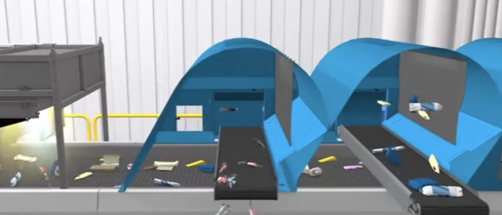
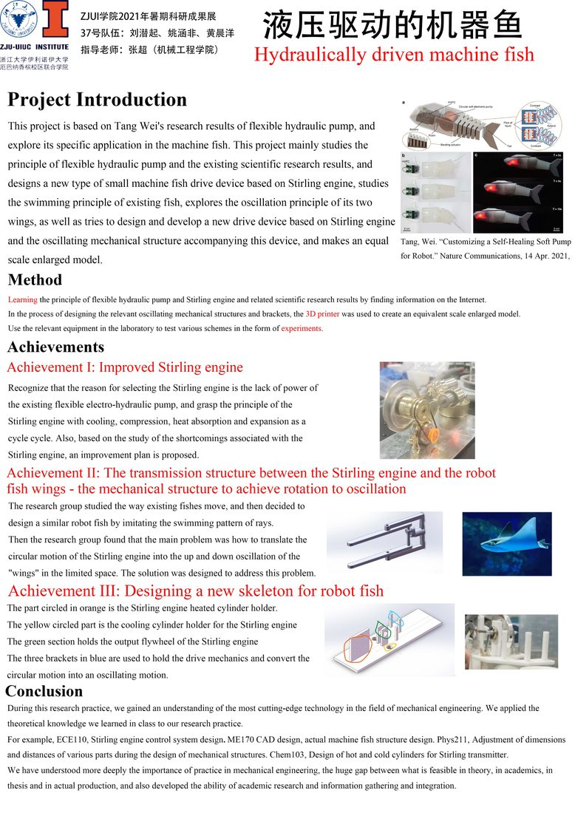
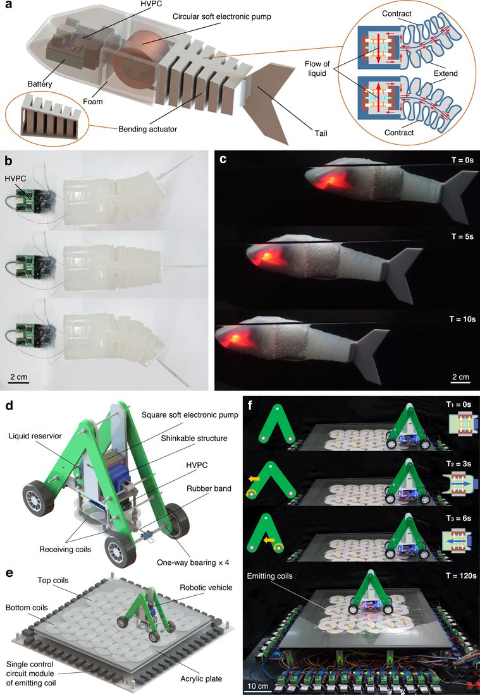

仿生机器鱼的驱动与传动机构改进
针对课题组"柔性电液泵机器鱼"动力不足的痛点，改良斯特林发动机作为新型驱动源，并自主设计"圆周运动→垂直摆动"的跨平面传动机构与机身骨架，完成等比例样机制作与游动测试。
项目背景
课题组以"柔性电液泵"（一种仿生双向变量液压泵，发表于 Nature Communications）为基础，探索其在微型机器鱼中的应用。现有电液泵受电池与电子技术限制存在动力不足问题，是制约微型机器鱼实用化的两大难点之一（另一为机械结构）。
我的具体工作
- 驱动源改良：调研大量文献后选定斯特林发动机作为替代驱动方案，从原理出发计算所需扭矩，调整各部件间距，解决部件间阻力与衔接难题，使驱动系统正常运转。
- 运动转换机构设计（核心创新）：斯特林发动机输出的圆周运动平面与鱼翅摆动平面相互垂直，现有结构只能在同一平面内转换。自主设计出一套仅三个零件的机构，成功实现圆周运动 → 垂直上下摆动的转换。
- 机身骨架设计：为加热/冷却气缸、输出飞轮、传动机构设计一体化支架，并迭代精简体积。
- 建模与样机：用 CAD 建模、3D 打印制作等比例放大模型并测试。
技术与工具
CAD 建模、3D 打印、斯特林热力学循环分析、机构运动学、文献调研、电子学基础。
成果与亮点
- 项目获浙江大学暑期学生科研实践优秀展报奖。
- 完成"斯特林驱动样机 + 自创运动转换机构 + 机身骨架"三大模块的设计—制造—测试闭环。
- 将课堂理论（CAD / 力学 / 热力学 / 电子学）首次落地到真实工程样机。
项目图片




点击图片可查看大图。
姚涵非 · 返回主页